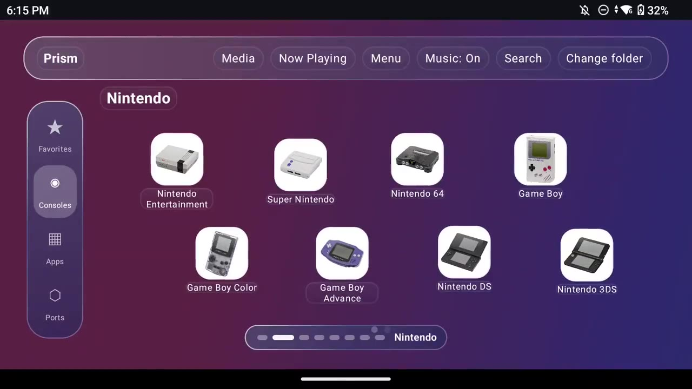
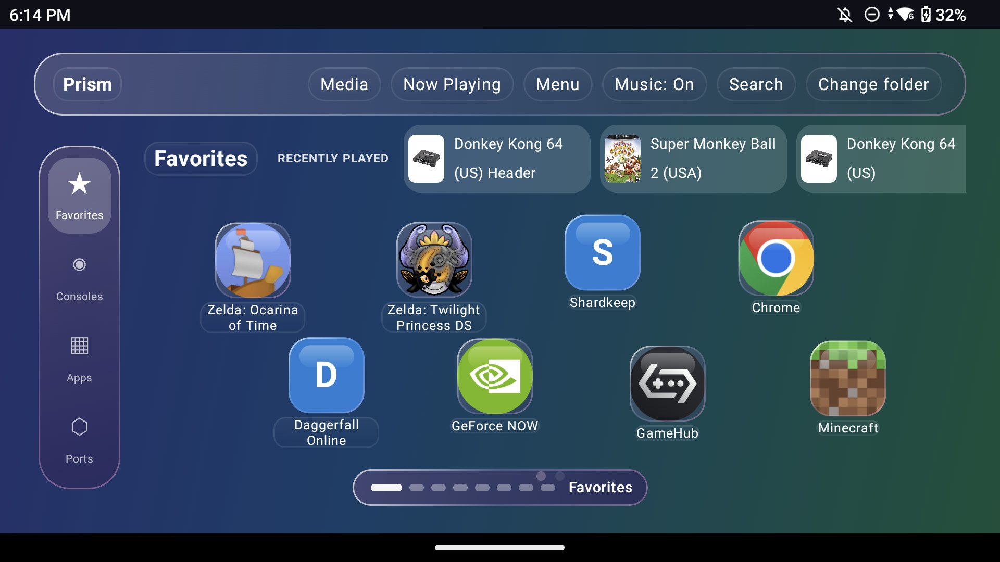
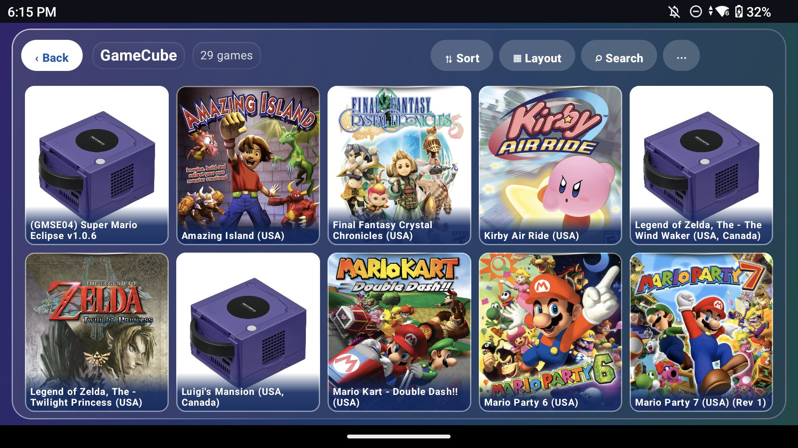
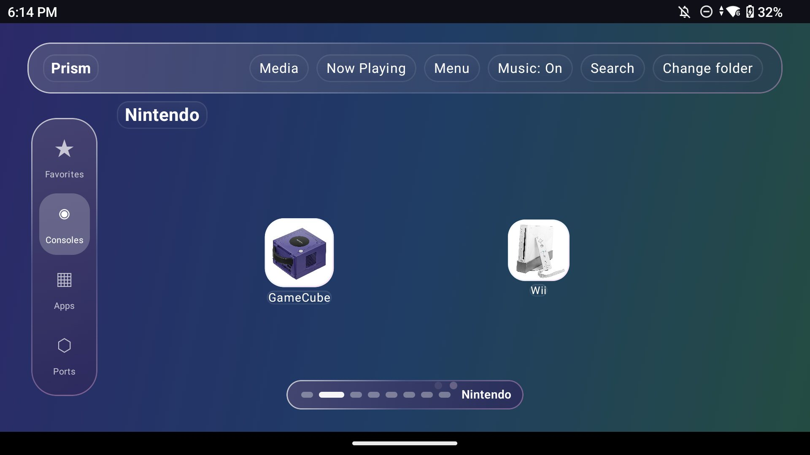
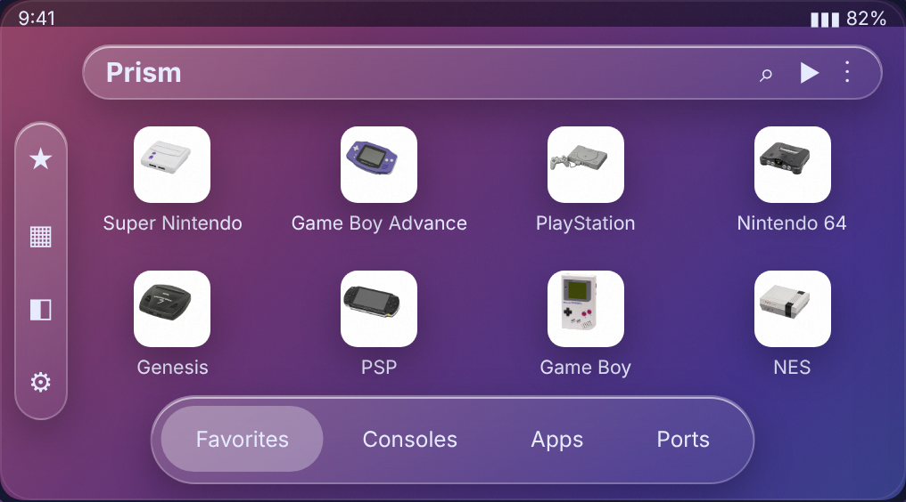
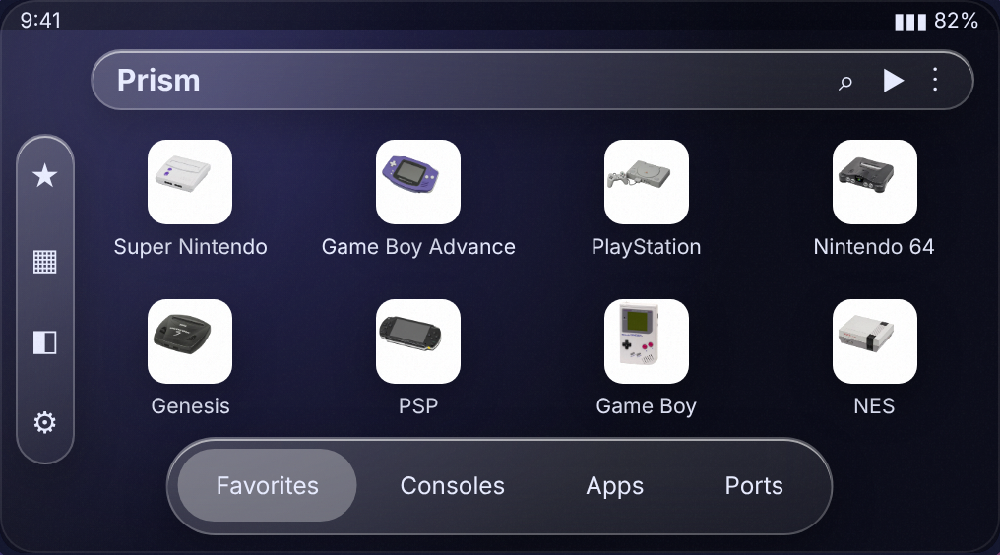
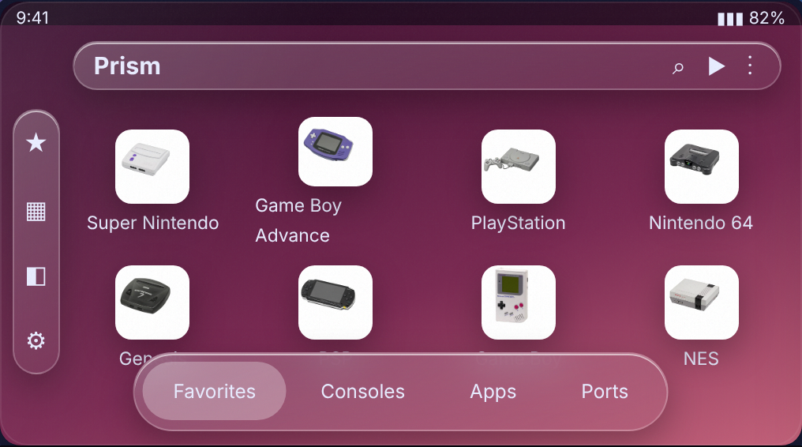
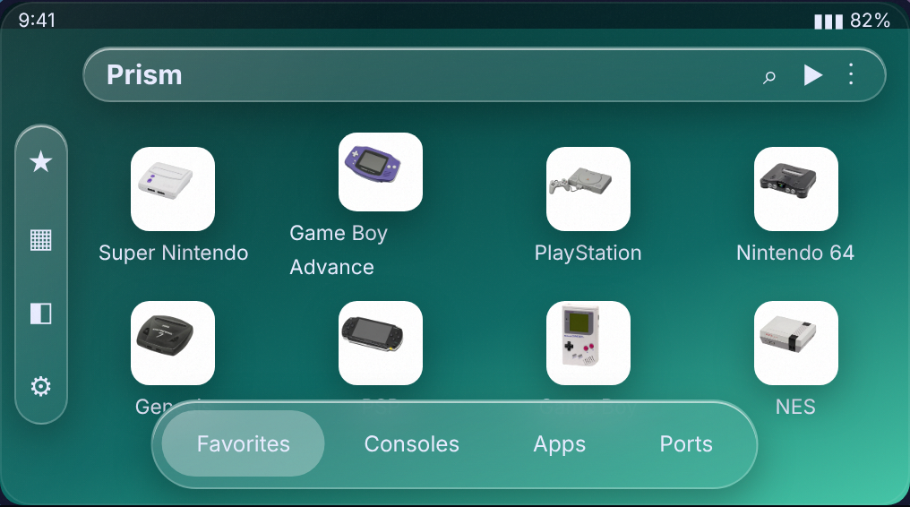

Game shelves with box art
Open a console and your games are already there, scanned from your folders, with cover art and sort, layout and search controls.
A calm, frosted-glass home screen for Android gaming handhelds. Console tiles, favorites and full gamepad control. Built for the Retroid Pocket 6.



Real console art on frosted tiles. Tap one to see it take the shelf. The tilt and glow are the same ones the app does.
Showing shelf: Super Nintendo. More systems are in the app, from Game Gear to Dreamcast, plus a Ports page for native Android ports.
No busy scenes or clutter. Just your games, in a launcher that feels at home on a handheld.




Your most played games on the first page, in one row. Everything else is one page down.
Open a console and your games are already there, scanned from your folders, with cover art and sort, layout and search controls.
Move with the d-pad, launch with A, back with B. The touchscreen works too, but you never need it.
Nintendo, Sega, Sony and more, each on its own page with real console art. Scroll down a page, pick a system, play.
Open a system you have no emulator for and Prism offers the right one, downloaded straight from the developer's GitHub release. No app store, no hunting for APKs.
A Ports page lists native Android ports and recompilations. Installed ones show Open and Check for update; the rest show Get. You bring your own game files.
The list is a small catalog file bundled with the app, so adding an emulator or port is a one-line change. Emulators and ports are made by their own developers and downloaded from their own releases.
Ink for night, Rose and Mint for colour, Aurora for a slow drift that never repeats. Pick one in Settings or at first launch.

Slow colour drift, about a minute per cycle.

Near black with a faint indigo glow. Easy on AMOLED.

Plum to dusty pink. Warm and calm.

Deep teal to sea green.
Launches RetroArch, Dolphin, PPSSPP, DuckStation, melonDS and any other emulator you already use, plus native Android ports like Ship of Harkinian, Perfect Dark and Zelda 3. Missing one? Download it from inside the launcher.
Obtainium installs straight from GitHub and updates the app for you. Install it once, then tap below on your device.
An F-Droid listing is planned. Until then, use the GitHub APK or Obtainium.
paste-from-releaseScan on your handheld
No ads, no paywall, no tracking. If it made your day nicer, a tip pays for test devices and the time spent on updates. Never required, always appreciated.
No. You bring your own legally obtained games. Prism Launcher only launches the emulators you already have.
No. Open a system you have no emulator for and Prism offers a download from the emulator's own GitHub release. Android asks you to allow installs from Prism the first time. The Ports page does the same for native ports.
No. Android asks which Home app to use; pick Prism, or switch back any time in Settings > Default apps.
No. The console photos are public-domain images by Evan-Amos, and the look is its own.
Built and tested on the Retroid Pocket 6. Other Android 10+ handhelds should work. Tell me what you try.
Yes. It turns off motion and tilt to save battery and keep frame rates steady.